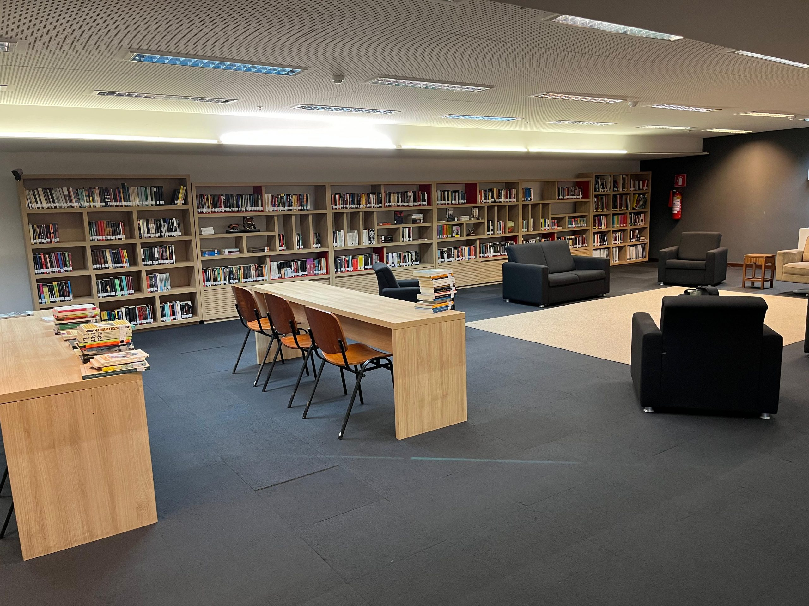
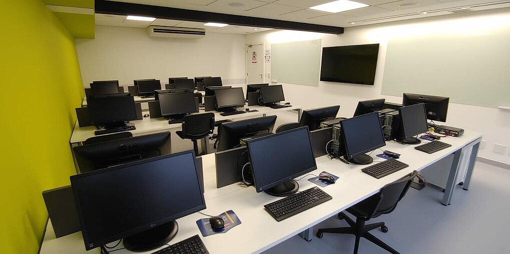
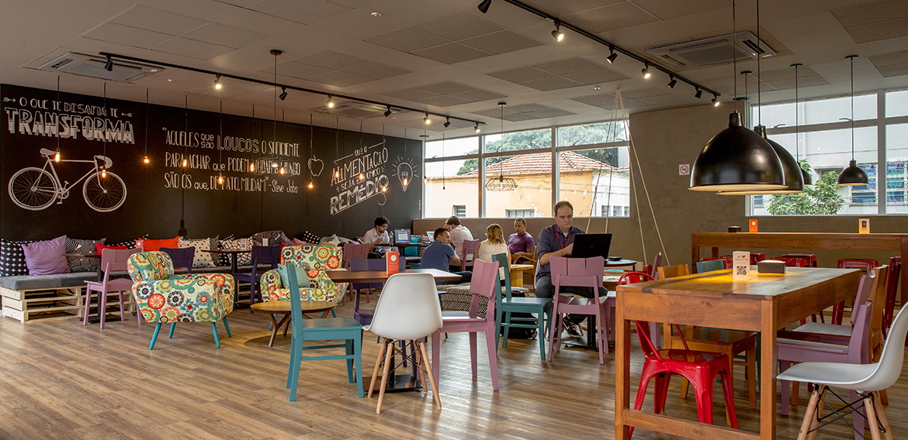

Bem-vindo ao Conecta Campus
O Conecta Campus é uma plataforma inovadora que visa facilitar a comunicação e a interação entre estudantes, professores e funcionários dentro do ambiente universitário. Aqui, você encontrará informações sobre eventos, notícias, recursos acadêmicos e muito mais.
Nosso Campus
Seu próximo passo começa aqui! Conheça oportunidades que impulsionam seu desenvolvimento.
Biblioteca
A biblioteca do nosso campus oferece uma vasta coleção de livros, periódicos e recursos digitais para apoiar o aprendizado e a pesquisa dos estudantes.

Laboratórios
Nossos laboratórios são equipados com tecnologia de ponta, proporcionando um ambiente ideal para experimentação e desenvolvimento de projetos acadêmicos.

Centro de convivência
O centro de convivência é um espaço colaborativo onde estudantes e professores podem se reunir para discussões, encontros e atividades extracurriculares.
